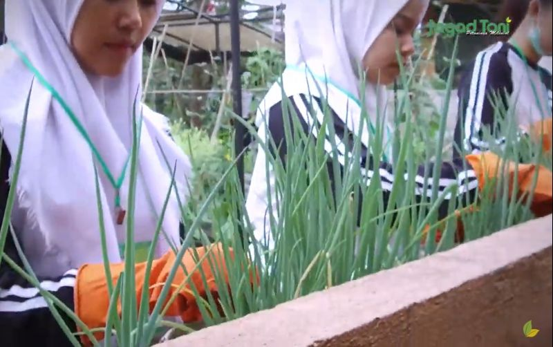

SMK Wikrama Bogor memiliki ciri khas unik tersendiri dibandingkan sekolah lainnya, yaitu adanya kebun diatap sekolah. Kami menyebutnya dengan panggilan green roof. Kordinator Pendidikan Perkelanjutan SMK Wikrama, Kiki, menjelaskan terdapat dua jenis green roof yang Kami bangun diatap sekolah, yaitu green roof produktif dan green roof variatif.